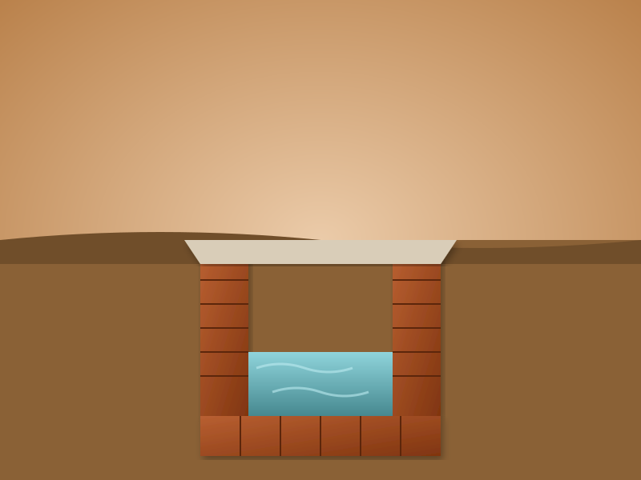

Ruins of Hygiene
The excavations at Mohenjo-Daro and Harappa provide undeniable physical proof of a society uniquely structured around preventing infectious diseases. The archaeological mapping of the Great Bath reveals layers of natural bitumen (tar) carefully sandwiched between fired bricks to ensure complete waterproofing.
This level of perfection wasn't purely structural—it was biological. Stopping water from seeping into the masonry prevented the incubation of fungi and waterborne bacterial colonies. Hundreds of intact, sealed domestic well shafts have been retrieved from the ruins, proving an intense societal mandate to isolate clean water grids from wastewater runoff.
